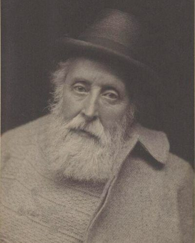

Ideologies / Libertarian
What is Voluntaryism?
Voluntaryism is a political ideology in the Libertarian family. Herbert holds that each person owns their own mind and body, so nobody, and no majority, may rightfully use force on a person who has used none. The state is justified only in restraining force and fraud. Everything else, including education, poor relief and religion, must be left to free association, and even the state's own revenue should come from voluntary payments in place of compulsory taxes. He kept a limited state and did not call himself an anarchist.
A state may defend people against force, but must itself be paid for by choice.
Defined from: Auberon Herbert, The Right and Wrong of Compulsion by the State (1885)
See how close you are to Voluntaryism Dare a friend to answer as one


Where Voluntaryism stands on 13 axes
Each axis runs from 0 to 100. A score of 50 is the middle. On a classic compass it sits in the Libertarian Right quadrant.
| Axis | Position | Score | In words |
|---|---|---|---|
| EconomyMarket to Planned | 0 | Very strongly Market | |
| OwnershipPrivate to Collective | 0 | Very strongly Private | |
| RightsLiberty to Security | 0 | Very strongly Liberty | |
| GovernmentDemocracy to Autocracy | 25 | Strongly Democracy | |
| StructureDecentralised to Centralised | 10 | Very strongly Decentralised | |
| NationInternationalist to Nationalist | 20 | Strongly Internationalist | |
| ImmigrationMulticulturalist to Assimilationist | 40 | Leans Multiculturalist | |
| ValuesProgressive to Traditional | 45 | Balanced | |
| TechnologyAccelerationist to Precautionary | 30 | Strongly Accelerationist | |
| EnvironmentIndustrialist to Environmentalist | 30 | Strongly Industrialist | |
| ReligionSecular to Religious | 30 | Strongly Secular | |
| MilitaryPacifist to Militarist | 5 | Very strongly Pacifist | |
| TradeFree Trade to Protectionist | 0 | Very strongly Free Trade |
Ideologies closest to Voluntaryism
- Anarcho Capitalism90% alike
- Agorism87% alike
- Minarchist Libertarianism87% alike
- Natural Law Anarchism86% alike
- Hayekian Liberalism86% alike
Its opposite on this map is Juche, at 8%.
Parties near Voluntaryism
- Libertarian PartyUnited States. Libertarian Party Platform (2022)88% alike
- Libertarian Party of 1972United States. Libertarian Party Platform (1972)84% alike
- Liberal PartyUnited Kingdom. The Newcastle Programme (1891)80% alike
- Democratic Republican PartyUnited States. The Kentucky and Virginia Resolutions (1798)77% alike
Common questions
What is Voluntaryism?
Voluntaryism is a political ideology in the Libertarian family. Herbert holds that each person owns their own mind and body, so nobody, and no majority, may rightfully use force on a person who has used none. The state is justified only in restraining force and fraud. Everything else, including education, poor relief and religion, must be left to free association, and even the state's own revenue should come from voluntary payments in place of compulsory taxes. He kept a limited state and did not call himself an anarchist.
What does Voluntaryism believe?
In one line: A state may defend people against force, but must itself be paid for by choice. Its strongest positions are Market, Private, Liberty. Herbert holds that each person owns their own mind and body, so nobody, and no majority, may rightfully use force on a person who has used none. The state is justified only in restraining force and fraud. Everything else, including education, poor relief and religion, must be left to free association, and even the state's own revenue should come from voluntary payments in place of compulsory taxes. He kept a limited state and did not call himself an anarchist.
Who founded Voluntaryism?
Voluntaryism is defined here from The Right and Wrong of Compulsion by the State (1885) by Auberon Herbert. The thinker most tied to it is Auberon Herbert (1838 to 1906).
Is Voluntaryism left wing or right wing?
On a classic two axis compass Voluntaryism falls in the Libertarian Right quadrant, which means the economic right and the libertarian side. Left and right hide a lot, though, which is why EthosScales scores it on thirteen separate axes.
How is Voluntaryism different from Anarcho Capitalism?
They are close: 90% alike. The biggest gaps are on Environment, where Voluntaryism scores 30 and Anarcho Capitalism scores 10, and Structure, where Voluntaryism scores 10 and Anarcho Capitalism scores 0. On each axis, 0 is one end and 100 is the other.
Think this is wrong? Suggest a correction. The scores are editorial estimates.